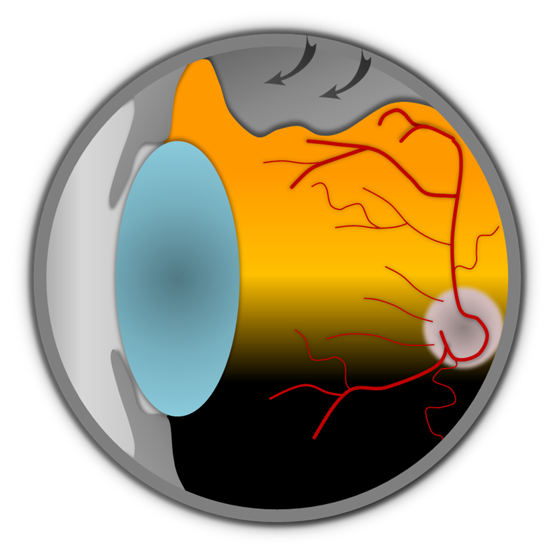
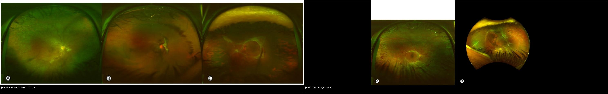
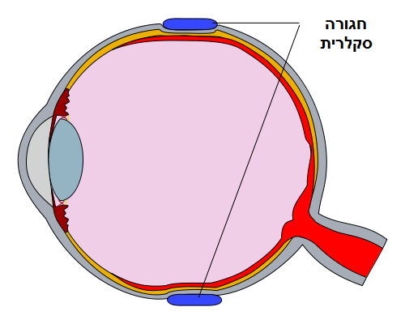
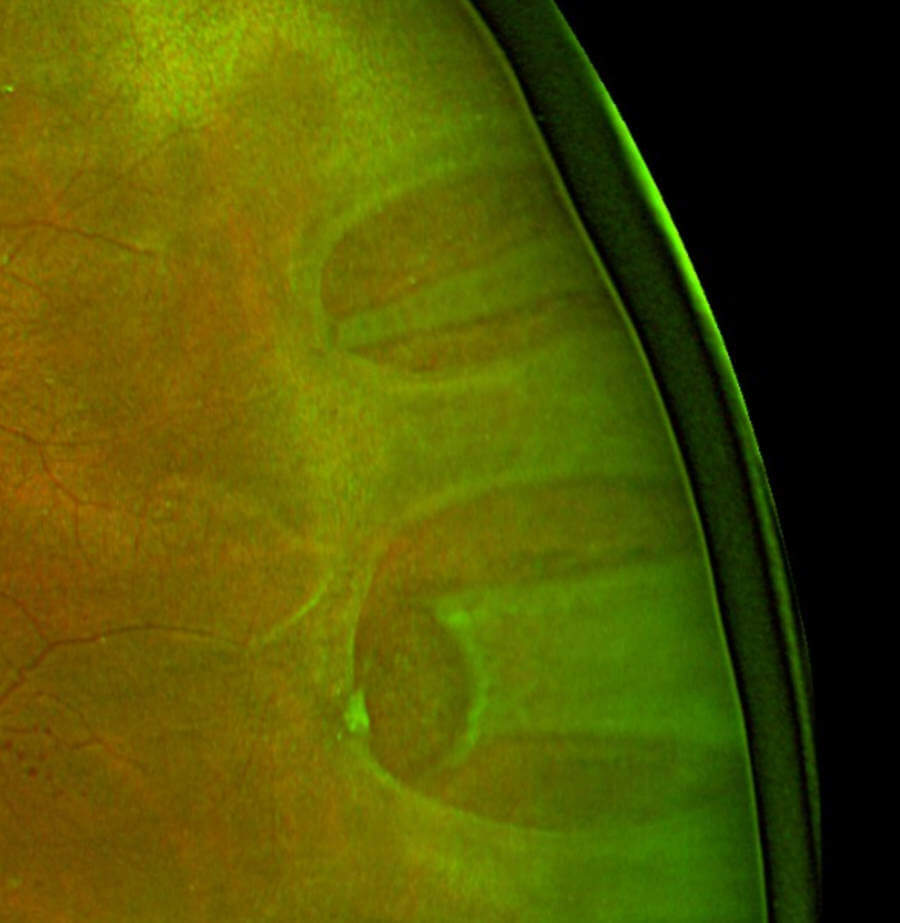
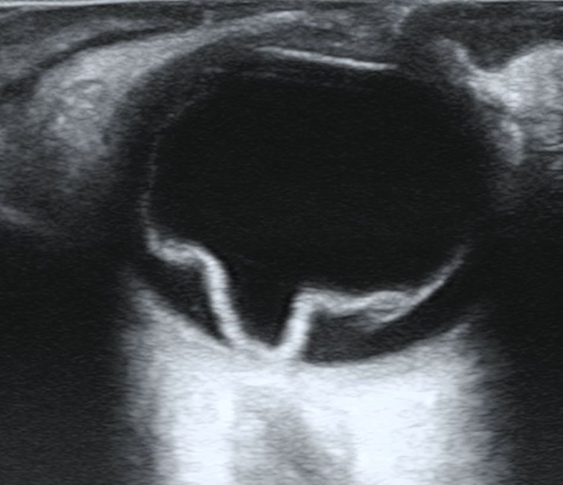
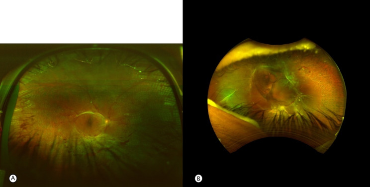

445 — Bong võng mạc: rách vs co kéo vs tiết dịch + PVR / Retinal detachment
Tags: pattern:bong-vong-mac vung:vong-mac protocol:sieu-am-B-scan
Mức chắc chắn (certainty): tổng hợp y văn (literature synthesis) — nhóm tự biên từ 1 nghiên cứu mở (CC BY 4.0) + ảnh CC BY/BY-SA Wikimedia, chưa gắn ca nguyên văn đơn lẻ.
1. Tổng quan — 3 cơ chế bong + số giờ mổ nằm lòng
- Bong do rách (rhegmatogenous, RRD): bong dịch kính sau (PVD) giật rách võng mạc (horseshoe tear) → dịch kính hóa lỏng chui qua rách, tách võng mạc cảm thụ khỏi RPE. TẠI SAO bong lan nhanh: khoang dưới võng mạc không có gì giữ, dịch chảy theo trọng lực — bong trên lan xuống hoàng điểm trong giờ–ngày.
- Bong co kéo (tractional, TRD): màng xơ–mạch (PDR, ROP, hồng cầu liềm) kéo võng mạc lên, không có rách — võng mạc căng như lều (tenting), ít di động. Khi màng kéo làm rách thêm → kết hợp co kéo + rách (TRRD) — vừa kéo vừa có dịch chui qua rách.
- Bong tiết dịch (exudative): dịch từ RPE/mạch (u hắc mạc, Coats, VKH, tăng HA ác tính) — không rách, không kéo, mặt bong nhẵn bóng, dịch đổi chỗ theo tư thế (shifting fluid).
- Số nằm lòng: hoàng điểm còn dính (macula-on) → mổ trong 24 giờ; hoàng điểm đã bong (macula-off) → mổ trong 1 tuần (càng sớm càng tốt, bong tươi < 7 ngày thị lực hậu phẫu tốt hơn rõ); khí C3F8 trong mắt 6–8 tuần, SF6 ~2 tuần — BN không được bay cao/leo núi khi còn khí.

Cơ chế PVD → rách: dịch kính co (mũi tên) giật rách võng mạc, dịch hóa lỏng chui qua. Nguồn: Sabine Sahr, CC BY 4.0 via Wikimedia Commons.2. Gamut chớp sáng + ruồi bay + màn che — hỏi 3 câu trước khi soi
- Chớp sáng + ruồi bay tăng + màn che từ ngoại vi + bụi thuốc lá (Shafer sign): RRD — tìm rách ngoại vi, phân macula-on/off.
- ĐTĐ lâu năm + màng xơ + bong căng hình lều, ít di động: TRD — mổ cắt dịch kính bóc màng, laser bổ sung.
- Bong bóng nhẵn + dịch đổi chỗ khi đổi tư thế + không rách: tiết dịch — tìm u/viêm (siêu âm + MRI hốc mắt), chữa nguyên nhân, không mổ võng mạc vội.
- Bong cũ + nếp sao (star folds) + võng mạc cứng không duỗi: PVR — mổ phức tạp (bóc màng + dầu silicon), tiên lượng dè dặt.
- Mờ + siêu âm chữ V/Y dính đĩa thị: bong võng mạc (chi tiết siêu âm bài 411); rung động sau cử động (aftermovement) = xuất huyết dịch kính kèm.
3. Bảng so sánh phân biệt (ma trận đối chiếu)
| Thực thể (entity) | Hình ảnh điển hình | Chốt vào (rule-in) | Chốt loại (rule-out) | Gợi ý xác nhận |
|---|---|---|---|---|
| RRD | Rách móng ngựa + dịch dưới võng mạc + Shafer | Thấy rách + bong lan từ rách | Không rách + mặt nhẵn → tiết dịch | Vẽ rách theo giờ + macula-on/off |
| TRD | Màng xơ–mạch kéo, võng mạc căng lều, ít di động | Màng kéo + ĐTĐ/ROP + không rách | Có rách → TRRD; dịch đổi chỗ → tiết dịch | Cắt dịch kính + bóc màng |
| TRRD | Vừa màng kéo vừa rách + võng mạc sóng (corrugated) | Kéo + rách cùng tồn tại | Chỉ kéo → TRD thuần | Mổ kết hợp (bóc màng + bịt rách) |
| Tiết dịch | Mặt nhẵn bóng + shifting fluid + không rách | Dịch đổi chỗ theo tư thế | Có rách/kéo → RRD/TRD | Siêu âm/MRI tìm u, chữa nguyên nhân |
| PVR | Nếp sao + màng trên/dưới + võng mạc cứng | Bong cũ + màng co rút | Bong tươi di động → chưa PVR | Dầu silicon + bóc màng, hẹn tái bong |

Trái: TRD đơn theo giai đoạn (A–C). Phải: TRRD kết hợp cấp (A–B). Nguồn: nghiên cứu vitrectomy TRD/TRRD type 1 diabetes 2026 Fig. 1 + Fig. 3 (PMC13326397), CC BY 4.0. Ảnh ghép letterbox.Quiz composite: che 2 nhãn, hỏi bên nào chỉ cần bóc màng, bên nào phải bịt rách thêm?
Bấm để hiện đáp án
- Trái = TRD đơn — chỉ kéo, chưa rách → bóc màng + giải phóng co kéo (chưa cần bịt rách vì không có rách).
- Phải = TRRD — vừa kéo vừa rách → bóc màng + bịt rách (laser/cryo + tamponade) vì dịch vẫn chui qua rách.
- Thấy rách là đổi hẳn kế hoạch mổ — soi ngoại vi kỹ mọi TRD.
Rách móng ngựa vs lỗ teo — 2 loại rách hay nhầm cách xử trí
- Rách móng ngựa (horseshoe): do PVD giật, có nắp (flap) + dịch dưới võng mạc, nguy cơ bong cao — laser bao quanh ngay kể cả chưa bong rộng.
- Lỗ teo (atrophic hole, trong lattice): không do kéo cấp, ít dịch — laser dự phòng khi có yếu tố nguy cơ (bong mắt còn lại, cận nặng, gia đình).
- Cạm bẫy: lattice ngoại vi không rách ở người không triệu chứng — soi vẽ bản đồ + hẹn, đừng laser hết mọi lattice.
4. Protocol chụp + chọn cách mổ
- Soi giãn + vẽ đáy mắt theo giờ: ghi rách (giờ, kích thước), dịch đến đâu, macula-on/off — tờ vẽ này quyết định mổ cấp hay hẹn.
- Siêu âm B-scan (mờ đục môi trường): chữ V/Y dính đĩa = bong võng mạc; aftermovement = máu dịch kính; T-sign = viêm củng mạc sau (tiết dịch) — chi tiết bài 411.
- Rách chưa bong rộng: laser/cryo bao quanh (barrage) — thủ thuật phòng mổ, không cần nằm viện.
- RRD macula-on: đai củng mạc (buckle) hoặc cắt dịch kính trong 24 giờ; macula-off: trong 1 tuần; rách trên + đơn độc + chưa PVR → bơm khí (pneumatic) + tư thế.
- TRD/TRRD + PVR: cắt dịch kính + bóc màng + laser + tamponade (khí/dầu silicon); dầu silicon cần mổ lấy ra sau vài tháng.

Đai silicon (xanh) ép lõm thành mắt đúng vị trí rách — nguyên lý buckle: khép rách từ ngoài, không vào trong mắt. Nguồn: Wikimedia Commons (R. Milano), CC BY-SA 4.0, nhãn gốc tiếng Hebrew. Dùng nguyên bản.flowchart TD
A[Chớp sáng + ruồi bay + màn che] --> B{Thấy rách?}
B -->|Có| C{Hoàng điểm còn dính?}
C -->|Còn - macula-on| D[Mổ trong 24 giờ: buckle/vitrektomy]
C -->|Bong rồi - macula-off| E[Mổ trong 1 tuần, càng sớm càng tốt]
B -->|Không| F{Màng kéo?}
F -->|Có| G[TRD: cắt dịch kính + bóc màng]
F -->|Không| H{Dịch đổi chỗ theo tư thế?}
H -->|Có| I[Tiết dịch: tìm u/viêm, chữa nguyên nhân]
H -->|Không| J[Siêu âm B-scan: V/Y dính đĩa?]
5. Biến thể bình thường và cạm bẫy
- Bong dịch kính sau (PVD) đơn thuần: chớp + ruồi bay nhưng không rách, không Shafer, không màn che cố định — soi 1 lần + dặn quay lại ngay khi có màn che, đừng hẹn 6 tháng.
- Lattice ngoại vi: mỏng võng mạc trắng lưới, hay gặp cận thị — không rách thì theo dõi, đừng laser dự phòng tràn lan.
- Bong dưới (inferior) + rách trên: dịch chui từ rách trên chảy xuống — bịt rách trên là khỏi, đừng mổ ồ ạt toàn bộ.
- PVR bị bỏ sót: bong cũ cứng không duỗi mà mổ như bong tươi (chỉ bơm khí) là tái bong chắc chắn — sờ nếp sao + đánh giá di động trước mổ.
- Khí trong mắt + bay cao: khí giãn nở theo độ cao → tắc ĐM trung tâm/mù — dặn BN đeo vòng tay "khí trong mắt" + cấm bay đến khi khí tan hết.
6. Tự lượng giá — Blind Quiz
Ca 1 — Chớp sáng + ruồi bay + màn che thái dương. Soi rộng thấy gì?

- Hỏi: tổn thương hình móng ngựa là gì? Có dịch kèm không? Bong do cơ chế nào?
Bấm để hiện đáp án (findings + chẩn đoán)
- Dấu hiệu (findings): rách móng ngựa (horseshoe tear) có nắp + quầng dịch dưới võng mạc quanh rách.
- Chẩn đoán (diagnosis): RRD (bong do rách) — vì có rách + dịch chui qua rách.
- Xử trí: phân macula-on/off ngay — on thì mổ 24 giờ; laser bao rách nếu bong còn khu trú.
- Nguồn ảnh: Wikimedia Commons (Amaris5), CC BY-SA 4.0 (dùng nguyên bản).
Ca 2 — Mờ mắt, môi trường đục không soi được. Siêu âm này kết luận gì?

- Hỏi: màng sáng hình gì, dính ở đâu? Bong võng mạc hay xuất huyết dịch kính?
Bấm để hiện đáp án (findings + chẩn đoán)
- Dấu hiệu (findings): màng tăng âm hình chữ V/Y, đỉnh dính đĩa thị (ora–đĩa) — không rung aftermovement mạnh.
- Chẩn đoán (diagnosis): bong võng mạc trên siêu âm — vì V/Y dính đĩa là chốt (máu dịch kính: aftermovement + không dính đĩa).
- Lưu ý trung thực nguồn: tên file gốc ghi "fundus" nhưng nội dung là siêu âm B-scan — đọc theo nội dung, không theo tên file.
- Nguồn ảnh: Wikimedia Commons (CheckDO), CC BY-SA 4.0 (dùng nguyên bản). Nối bài 411.
Ca 3 — ĐTĐ type 1 lâu năm, màng xơ khắp nơi. Đây là TRD đơn hay đã kết hợp rách?

- Hỏi: vừa kéo vừa có gì thêm? Kế hoạch mổ khác TRD đơn ở điểm nào?
Bấm để hiện đáp án (findings + chẩn đoán)
- Dấu hiệu (findings): màng xơ–mạch kéo + võng mạc sóng (corrugated) + rách thứ phát — đủ bộ kết hợp.
- Chẩn đoán (diagnosis): TRRD (kết hợp co kéo + rách) — vì có rách trên nền màng kéo.
- Xử trí: cắt dịch kính + bóc màng + bịt rách + tamponade (khác TRD đơn chỉ cần giải phóng co kéo).
- Nguồn ảnh: nghiên cứu vitrectomy TRD/TRRD 2026 Fig. 3 (PMC13326397), CC BY 4.0.
Bài liên quan chéo
- 400 – Tổng quan Mắt
- 411 – Siêu âm nhãn cầu (V/Y dính đĩa vs máu dịch kính)
- 443 – Võng mạc đái tháo đường (TRD trong PDR)
- 450 – Mắt nhi (Coats/ROP gây bong tiết dịch/co kéo)
- 412 – U trong nhãn cầu (u hắc mạc gây bong tiết dịch)
Ảnh
445_RRD_Fundus_Wikimedia-Amaris5-CCBYSA40.jpg,445_RD_Fundus_Wikimedia-CheckDO-CCBYSA40.jpg(thực chất là siêu âm B-scan),445_scleral-buckle_Diagram_Wikimedia-RMilano-CCBYSA40.png— Wikimedia Commons, CC BY-SA 4.0 (giữ nguyên bản).445_ablatio_Diagram_Wikimedia-Sahr-CCBY40.png— Sabine Sahr, CC BY 4.0 via Wikimedia Commons (sơ đồ cơ chế PVD–rách).445_TRD-don_Fundus_PMC13326397-Fig1-CCBY.jpg,445_TRRD_Fundus_PMC13326397-Fig3-CCBY.jpg— nghiên cứu vitrectomy TRD/TRRD 2026 (PMCID: PMC13326397), CC BY 4.0.- Chi tiết giấy phép từng ảnh trong
images/CREDITS.md. AuntMinnie: chỉ dẫn link, không tải.
Không dùng để chẩn đoán độc lập khi chưa có người hướng dẫn.